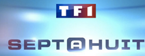
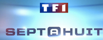

Claire Sevin
Directrice générale et co-fondatrice EndInk
Docteure en Pharmacie diplômée de l’Université de Strasbourg complété par un DU en dermatocosmétologie.
Enrichie de son voyage autour du monde, Claire Sevin se passionne pour l’art du tatouage ainsi que pour les différents moyens de les enlever. Elle réunit alors d’anciennes camarades de classe Morgane Diebold et Séverine Perrin afin de développer une nouvelle solution de détatouage efficace. C’est ainsi, qu’est fondée en 2020 la start-up strasbourgeoise EndInk® au Biopark 3 d’Illkirch-Graffenstaden. L’objectif d’EndInk est de révolutionner le marché du détatouage en apportant une solution indolore et à prix abordable : la gamme de crème de détatouage EndInk®. La crème apporte une nouvelle sensation de liberté et s’adapte à notre société où les modes se font et se défont.

Docteure en Pharmacie diplômée de l’Université de Strasbourg complété par un DU en dermatocosmétologie.

Ingénieure diplômée de l’École supérieure de biotechnologie de Strasbourg, elle effectue son Phd en immunologie et biologie à l’Université de Sherbrook au Canada.

Ingénieure diplômée de l’École supérieure de biotechnologie de Strasbourg et forte d’un master en gestion des entreprises de l’EM buisness school, Mme Perrin apporte son expertise scientifique et financière.

Ingénieure formulation et production. Diplômée à l’Ecole Polytechnique d’Athènes en Grèce. Elle possède une grande expérience en procédé de formulation de produits dermatologiques.

Diplômée de l’École supérieur de biotechnologie de Strasbourg, elle complète sa formation par un master en Qualité et Contrôle des Produits de Santé à l’Université de Paris-Saclay.
Pharmacien diplômé en 2008, il complète sa formation par un master en marketing et un DU délégué à l’information médicale.
Notre crème EndInk® Red contient une substance active qui dégrade les encres rouges/roses associée à des ingrédients d’origines naturelles aux gommes d'acacia et de tracaganthe. Cette crème apporte aussi des bienfaits cicatrisants, hydratants et apaisants.
SCM-002 En développement
DFRXM-404 En développement


 

M6 Capital, reportage du 06/02/2021 « la révolution des start-up française »
BFM buisness, reportage du 20/02/21 « Le monde des start-up »
66 Minutes, reportage du 03/04/2021 « Le tatouage en France »
Sept à Huit, reportage du 10/10/2021 « Le marché prometteur du détatouage »


L’équipe s’agrandit avec l’arrivée de Sophie Lim,étudiante en marketing, qui arrive tout droit de Paris. Elle travaillera sous la direction de Séverine et apportera son aide dans le développement de différents outils de communication. Souhaitons la bienvenue à Sophie !
L’équipe EndInk vous souhaite une bonne année 2021 ! Tous nos meilleurs vœux de bonheur et de réussite !
L’équipe EndInk est fière de vous annoncer que nous avons remporté le concours i-Lab ! Initié en 1999 par le ministère de la recherche, ce concours vise à récompenser les entreprises de technologies innovantes offrant ainsi un label précieux que nous pouvons faire valoir lors de la recherche de financements. Merci à tous pour votre soutien !
Le 17 Novembre 2020, retrouvez-nous au webinaire Gen2bio, le congrès annuel des biotechnologies organisé par Biogenouest. Plus d’informations à l’adresse suivante : https://www.biogenouest.org/article/gen2bio-2020/